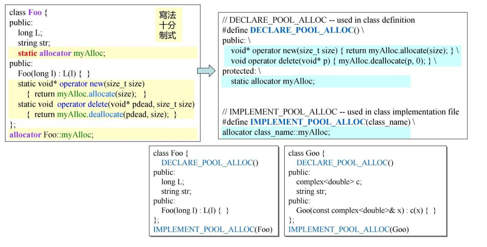
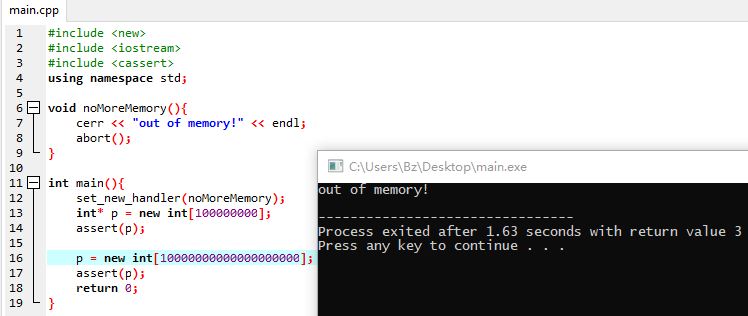

C++内存管理|04 内存池
1. per-class allocator (ver 1.0)
前面几篇内存管理介绍了在C++中进行内存管理的接口，有了这些接口就可以开始使用这些工具管理内存。首先来看一个来自<<C++ Primer>> 3ed, p765的一个例子：
#include <cstddef>
#include <iostream>
using namespace std;
class Screen {
public:
Screen(int x) :i(x) {};
int geti() { return i; };
void* operator new(size_t size) {
Screen *p;
if (!freeStore) {
size_t chunk = screenChunk * size;
freeStore = p = reinterpret_cast<Screen*>(new char[chunk]);
for (; p != &freeStore[screenChunk - 1]; ++p) {
p->next = p + 1;
}
p->next = 0;
}
p = freeStore;
freeStore = freeStore->next;
return p;
}
void operator delete(void* ptr, size_t) {
(static_cast<Screen*>(ptr))->next = freeStore;
freeStore = static_cast<Screen*>(ptr);
}
private:
Screen* next; //引入新的变量，造成内存的浪费？
static Screen* freeStore; //静态的，在各个类对象中共享
static const int screenChunk;
int i;
};
Screen* Screen::freeStore = 0;
const int Screen::screenChunk = 24; //一次分配24个对象所需要的内存空间
int main()
{
cout << sizeof(Screen) << endl;
const size_t N = 100;
Screen* p[N];
for (size_t i = 0; i < N; i++)
p[i] = new Screen(i);
for (size_t i = 0; i < 30; i++)
cout << p[i] << endl;
for (size_t i = 0; i < N; i++)
delete p[i];
return 0;
}
在之前了解到内存管理的目的无非有两个，一个是从运行效率上考虑，减少调用内存分配函数的调用可以使程序运行的更加流畅，另一个就是每次调用内存分配函数，系统不仅仅分配了我们想要的size的内存，这样就造成了内存的浪费。
上面的例子中，减少了内存分配函数的调用，但是为了这一点在类中添加了一个Screen* next的变量，这样虽然我们去掉了cookie，但是却又引进了一个新的浪费内存的地方。所有接下来来看对这个点进行优化的例子（<<Effective C++>> 2ed, item10）。
2. per-class allocator (ver 2.0)
class AirPlane {
private:
struct AirPlaneRep{
unsigned long miles;
char type;
};
private:
union {
AirPlaneRep rep;
AirPlane* next;
};
public:
unsigned long getMiles() { return rep.miles; }
char getTypes() { return rep.type; }
void set(unsigned long m, char t) {
rep.miles = m;
rep.type = t;
}
public:
static void* operator new(size_t size);
static void operator delete(void* deadObject, size_t size);
private:
static const int BLOCK_SIZE;
static AirPlane* headOfFreeList;
};
AirPlane* AirPlane::headOfFreeList = 0;
const int AirPlane::BLOCK_SIZE = 512;
void* AirPlane::operator new(size_t size)
{
AirPlane* p = headOfFreeList;
if (p){
headOfFreeList = p->next;
}
else{
AirPlane* newBlock = static_cast<AirPlane*>
(::operator new(BLOCK_SIZE * sizeof(AirPlane)));
//这个位置也可以从i=1开始进行单向链表的构建，因为i=0位置即将return回去被写入类成员的值
for (size_t i = 0; i < BLOCK_SIZE - 1; i++)
newBlock[i].next = &newBlock[i + 1];
newBlock[BLOCK_SIZE - 1].next = 0;
p = newBlock;
headOfFreeList = &newBlock[1];
}
return p;
}
void AirPlane::operator delete(void* deadObject, size_t size)
{
AirPlane* p = static_cast<AirPlane*>(deadObject);
p->next = headOfFreeList;
headOfFreeList = p;
}
这个例子相比Ver1.0避免引入额外的成员变量来占用空间，将指向未使用的内存的指针和成员变量设计生union的形式，这样在内存使用的时候它里面存放的是类成员变量的取值，如果它没有被使用，那么他就指向下一个待使用的内存块。
这两个例子中都使用了::operator new进行内存的申请，这个全局的函数实际上就是调用了malloc，但是我们却没有使用operator delete或者free进行内存的释放。假如在程序中某个位置使用了10000个类对象，然而其他时候都只使用少量的几个，这就造成内存的浪费，因为一旦进行了对象的创建，内存分配后是没有释放的。但是在哪个位置进行内存的释放呢？这个问题又显得比较困难。
3. static allocator
从上面的ver2.0可以看出，如果我们需要对一个类进行内存的管理，那么我们就在类里面重载两个函数就好了，这种写法非常的固定。假如我们设计的类比较多，那么这些代码就造成了比较大的重复。从软件工程的角度来看，应该将这些重复性比较高的地方集中写在一个地方，这样对于软件的维护是比较好的选择。这样就诞生了第三个版本的内存管理。
将内存分配相关的函数封装到一个类里面，然后需要进行内存管理的类就调用它。
class allocator {
private:
struct obj{
struct obj* next; //embedded pointer
};
public:
void *allocate(size_t);
void deallocate(void*, size_t);
private:
obj* freeStore = nullptr;
const int CHUNK = 5; //每次一下分配5个对象所占的空间
};
void* allocator::allocate(size_t, size)
{
obj* p;
if (!freeStore)
{
//linkd list 空间用完，申请新空间
size_t chunk = CHUNK * size;
freeStore = p = (obj*)malloc(chunk);
for (int i = 0; i < CHUNK; i++) //将新申请的空间串起来
{
p->next = (obj*)((char*)p + size);
p = p->next;
}
p->next = nullptr;
}
p = freeStore;
freeStore = freeStore->next;
return p;
}
void allocator::deallocate(void* p, size_t)
{
((obj*)p)->next = freeStore;
freeStore = (obj*)p;
}
//一个调用的Client端
class Foo {
public:
long L;
string str;
static allocator myAlloc;
public:
Foo(long l) :L(l) { }
static void* operator new(size_t size){
return myAlloc.allocate(size);
}
static void operator delete(void* pDead, size_t size) {
return myAlloc.deallocate(pDead);
}
};
allocator Foo::myAlloc;
//另一个调用的Client端
class Goo {
public:
complex<double> c;
string str;
static allocator myAlloc;
public:
Goo(const complex<double>& x) :c(x) { }
static void* operator new(size_t size) {
return myAlloc.allocate(size);
}
static void operator delete(void* pDead, size_t size) {
return myAlloc.deallocate(pDead);
}
};
allocator Goo::myAlloc;
4. macro for static allocator

上述的改进仅仅就是将我们封装的类做成宏的形式，这样进一步减少在调用时候代码的编写量。但是宏的使用是个颇具争议性的话题，有些地方非常抵制在代码中使用宏，因为使用宏会增加代码调试的难度，有些埋藏在宏中的bug难以发现。
5. new handler
在使用new分配内存的时候，如果new发现没办法分配的时候会抛出一个异常std::bad_alloc exception。如果我们制定了new handler，那么在排除一场之前就会先进到我们设定的new handler里面（可能不止一次的进入）。在VC6中可以看到如果我们设置了new handler，就会在while循环里面执行new handler，从注释上可以看到，VC6中是让用户在new handler里面获取更多的内存。
![1584423129321.png)
new handler的形式和设置方法：
typedef void (*new_handler)();
new_handler set_new_handler(new_handler p) throw();
设计优秀的new handler应该是基于两点的：一是在new handler里面释放掉没有使用的内存，让内存得到更多有效的使用。另一个是在分配失败的时候调用abort()或者exit()来让用户知晓，这样既方便用户更好的使用，又可以让程序更容易的debug。
使用代码测试new handler，下列的代码在VS2017中编译无法通过，显示new[]中的值不能过大。在GCC4.9中编译有warning，但是可以通过。
#include <new>
#include <iostream>
#include <cassert>
using namespace std;
void noMoreMemory(){
cerr << "out of memory!" << endl;
//abort(); //gcc4.9 不调用abort中断的时候可以看到一直打印out of memory! 说明确实是多次进入了该函数
}
int main(){
set_new_handler(noMoreMemory);
int* p = new int[100000000];
assert(p);
p = new int[10000000000000000000];
assert(p);
return 0;
}
运行后可以看到确实进入到了设置的new handler里面。

6. =default, =delete
=default、=delete 是C++11的新特性，分别为：
-
显式缺省：告知编译器生成函数默认的缺省版本；
-
显式删除：告知编译器不生成函数默认的缺省版本。
C++11中引进这两种新特性的目的是为了增强对“类默认函数的控制”，从而让程序员更加精准地去控制默认版本的函数。C++中，当我们设计与编写一个类时，若不显著写明，则类会默认为我们提供如下几个函数：
构造函数
析构函数
拷贝构造函数
拷贝赋值函数（operator=）
移动构造函数
以及全局的默认操作符函数 operator, operator & operator && operator * operator-> operator->* operator new/operator new[] operator delete/operator delete[]
- 原文作者：Binean
- 原文链接：https://bzhou830.github.io/post/20180114C++%E5%86%85%E5%AD%98%E7%AE%A1%E7%90%8604/
- 版权声明：本作品采用知识共享署名-非商业性使用-禁止演绎 4.0 国际许可协议进行许可，非商业转载请注明出处（作者，原文链接），商业转载请联系作者获得授权。